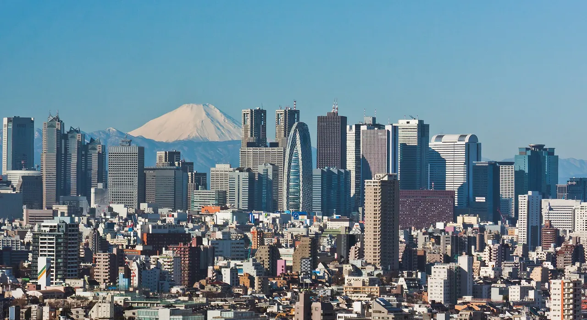
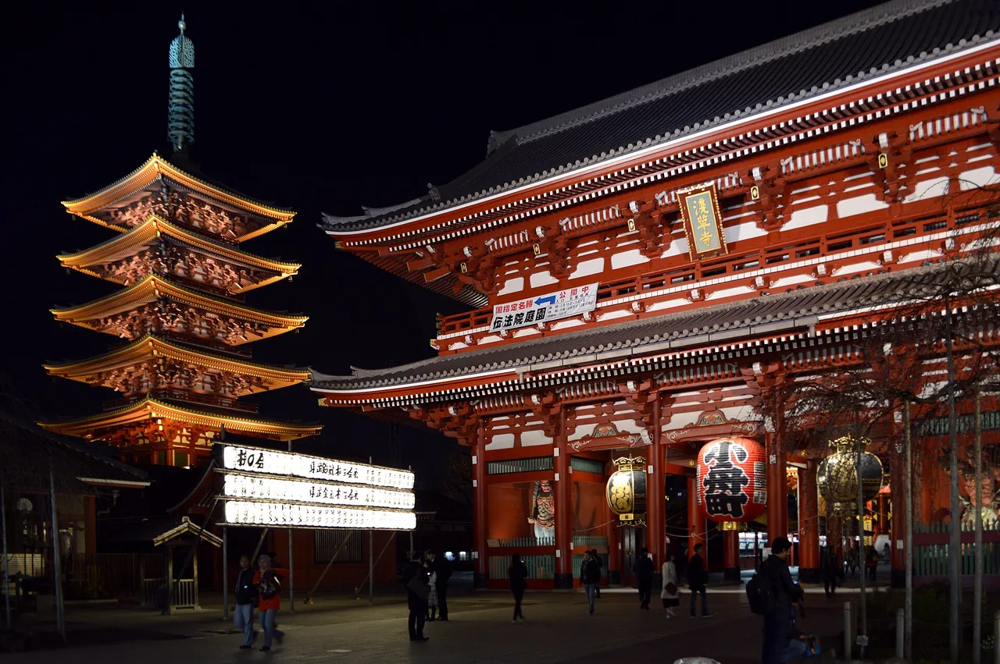
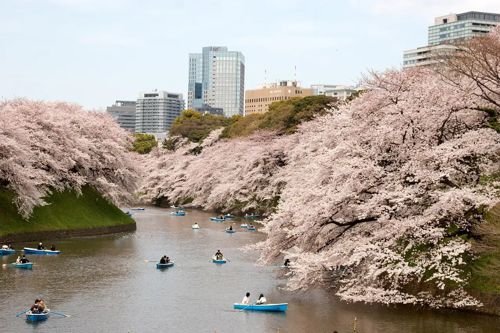
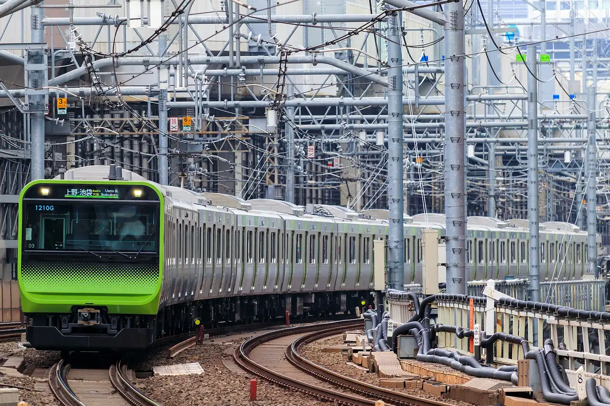
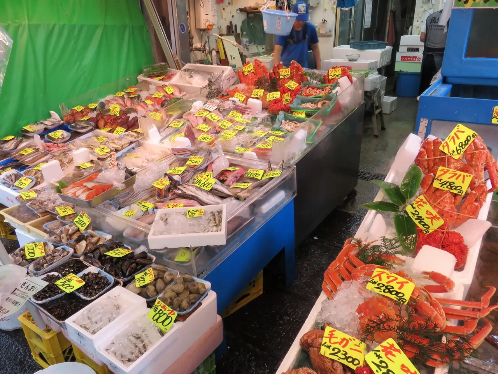
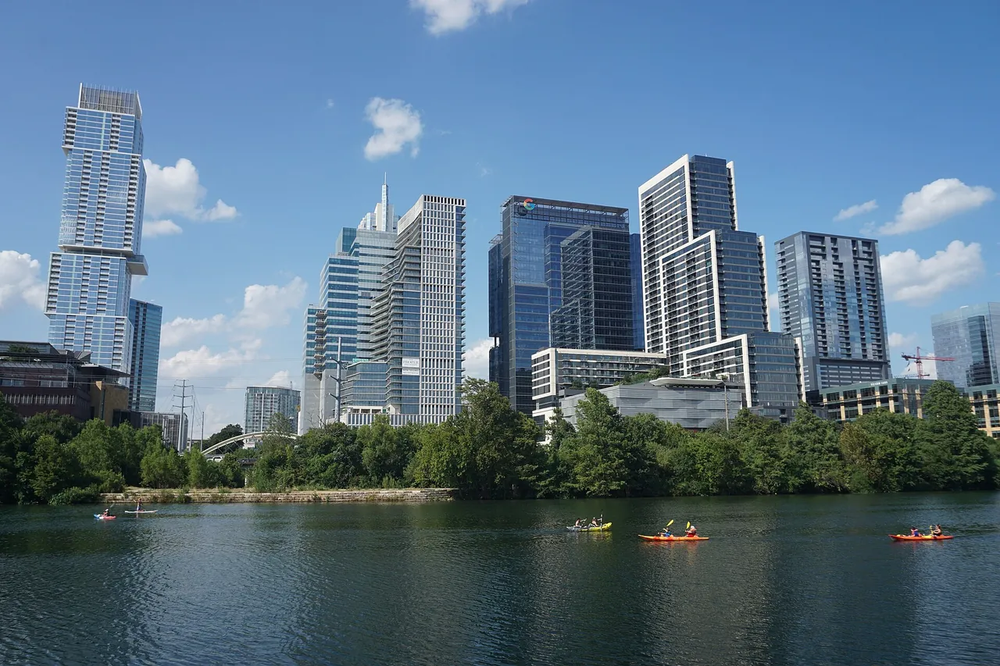
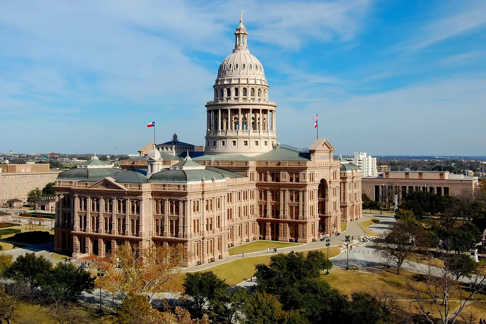
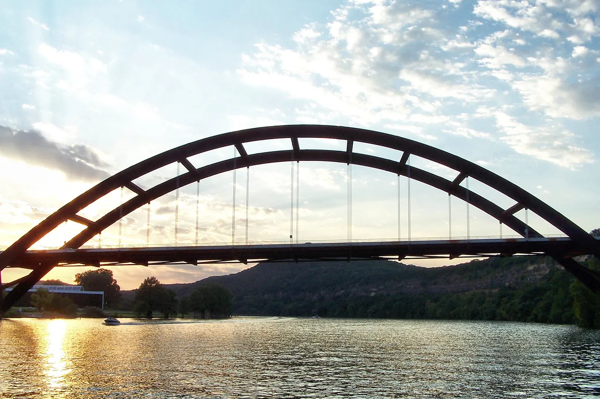
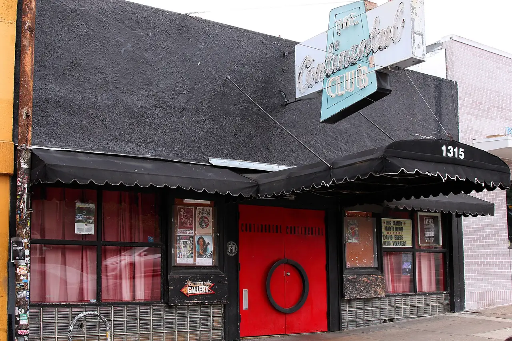
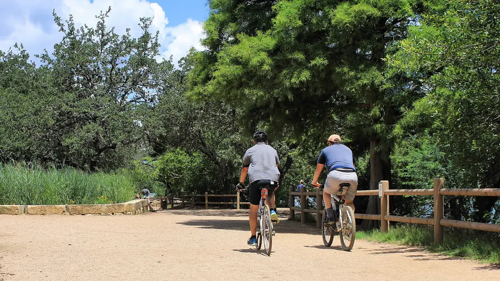

10 photos · 2 cities · photo 1 (outlined) is the mosaic's large photo · generated 2026-11-08
Tokyo tokyo

1. Mount Fuji behind the Shinjuku skyscrapers on a clear winter dayAlt: A cluster of tall office towers above a dense low-rise city, with snow-capped Mount Fuji behind under a blue skyMorio · CC BY-SA 3.0 · Commons · 1280×699

2. The five-storey pagoda and Hōzōmon gate of Sensō-ji, Tokyo's oldest temple, in AsakusaAlt: A red five-storey pagoda and a large red temple gate with hanging lanterns, lit up at nightDimiTalen · CC0 · Commons · 1280×851

3. Cherry blossom and rowing boats on the Imperial Palace moat at ChidorigafuchiAlt: Cherry trees in full pale pink bloom leaning over both banks of a moat dotted with small blue rowing boats, with office towers behindKimonBerlin · CC BY-SA 2.0 · Commons · 1280×853

4. A Yamanote Line train, the loop line that links Tokyo's main districtsAlt: A silver commuter train with a green front curving along the tracks under a dense web of overhead wiresyagi-s · CC BY 2.0 · Commons · 1280×853

5. Crab, shellfish and fish on sale in the Tsukiji Outer MarketAlt: A market stall with trays of fresh fish, shellfish and red crabs on ice, marked with yellow price tagsAw1805 · CC BY-SA 3.0 · Commons · 1280×960
Austin austin

1. Downtown Austin's towers above Lady Bird Lake, with kayakers on the waterAlt: Glass high-rise towers behind a band of green trees on the bank of a calm lake with several kayaks, under a blue skyMichael Barera · CC BY-SA 4.0 · Commons · 1280×853

2. The Texas State Capitol, built of pink granite, at the head of Congress AvenueAlt: A domed pink granite capitol building in wide grounds with trees, seen from above under a blue skyLoneStarMike · CC BY 3.0 · Commons · 1280×853

3. The Pennybacker Bridge over Lake Austin at sunset, on the edge of the Hill CountryAlt: A steel arch bridge in dark silhouette over a lake at sunset, with wooded hills behindLarry D. Moore · CC BY 4.0 · Commons · 1280×853

4. The Continental Club on South Congress, one of the city's long-running live-music venuesAlt: A black club front with a red door, striped awnings and a vintage neon sign reading Continental ClubLarry D. Moore · CC BY 4.0 · Commons · 1280×853

5. Cyclists on the Butler Hike-and-Bike Trail, the loop around Lady Bird LakeAlt: Two cyclists riding along a gravel trail between trees and reeds beside a wooden fenceLarry D. Moore · CC BY 4.0 · Commons · 1024×576
.jpg){kind=link}

.jpg){kind=link}


.jpg){kind=link}